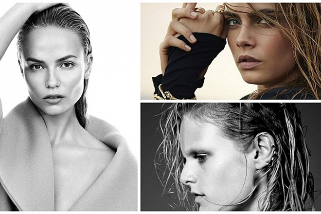

Модні зачіски на літо 2019
Розпущене пряме волосся вже кілька років поспіль утримуює свої позиції на модному п’єдесталі. Це не дивно — вони підходять практично всім без винятку жінкам і не вимагають особливих зусиль у створенні. Блискуче і шовковисте пряме волосся, що розвиваються на вітрі й блистить під променями сонця, додадуть жіночності та романтизму в будь-який образ. Не важливо, кругле у вас обличчя або овальне — довге розпущене пряме волосся підкреслять вашу справжню красу.
Таку зачіску для своїх моделей на показах моди вибрали безліч кутюр’є, серед яких такі відомі бренди, як Versace, DKNY, Altuzarra.
Божевільний об’єм
Не менш популярні пишні зачіски і начісування. Ті, що прийшли до нас з далеких 60-их, ці зачіски стали улюбленицями багатьох жінок, серед яких і ті, хто від природи нагороджений густий і пишною шевелюрою, так і ті, хто витрачає колосальні зусилля на те, що б штучно її створити. На щастя, зараз існує безліч способів і косметичних засобів, що допомагають перетворити тьмяне тонке волосся в густу копицю. На картинці зображені зачіски моделей, які представили колекції будинків моди Bottega Veneta, Loewe, Marc By Marc Jacobs.
Екстремально короткі стрижки 2019
Коротка стрижка — це завжди елегантно. Одне з модних напрямів — мінімалізм — не оминуло і область модних стрижок і зачісок 2014 року. Коротка стрижка не вимагає тривалих укладок, а також є ідеальним рішенням для дівчат, чиє волосся від природи повністю позбавлені об’єму. Якщо вам не подобаються кардинально прямі лінії, за допомогою філірувальних ножиць можна досягти природності і гармонійності в короткій стрижці. Однак важливо пам’ятати, що хоч така зачіска і в тренді, але вона підходить далеко не кожній жінці, тому перед тим, як зробити екстремально коротку стрижку краще проконсультуватися з професійним стилістом. На картинці зображені стрижки з осінньо-зимового показу 2013-2014 дизайнерів Lanvin, Matthew Williamson, No21.
Ефект мокрого волосся
Ще один гарячий тренд — зачіски з ефектом мокрого волосся. Мода на «мокре» укладання то займає лідируючі позиції, то повністю йде в тінь. Зараз такі укладання знову на піку популярності. Головна перевага такої зачіски (крім того що це шалено красиво, чуттєво і сексуально) в тому, що її можна зробити буквально за кілька хвилин. Не вимагає ніяких тимчасових витрат і професійних навичок, зачіска з ефектом мокрого волосся миттєво перетворить вас, додавши в образ нотки романтики. Мокрий ефект бездоганно виглядає як на довгому, так і на короткому волоссі. (Blumarine, Prada, Louis Vuitton)
